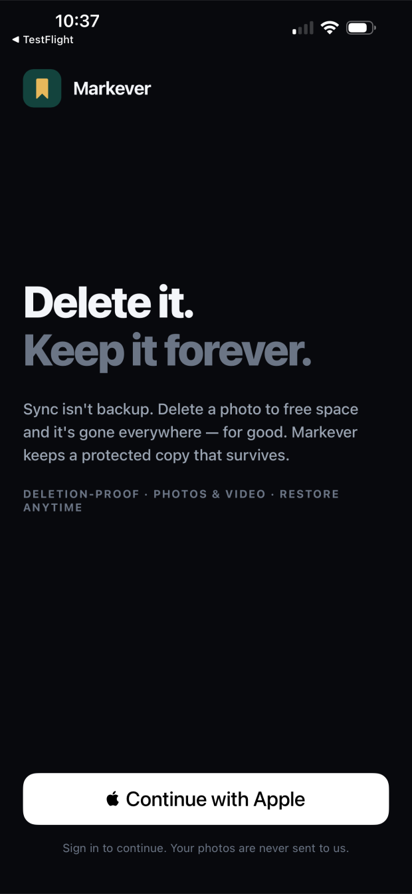
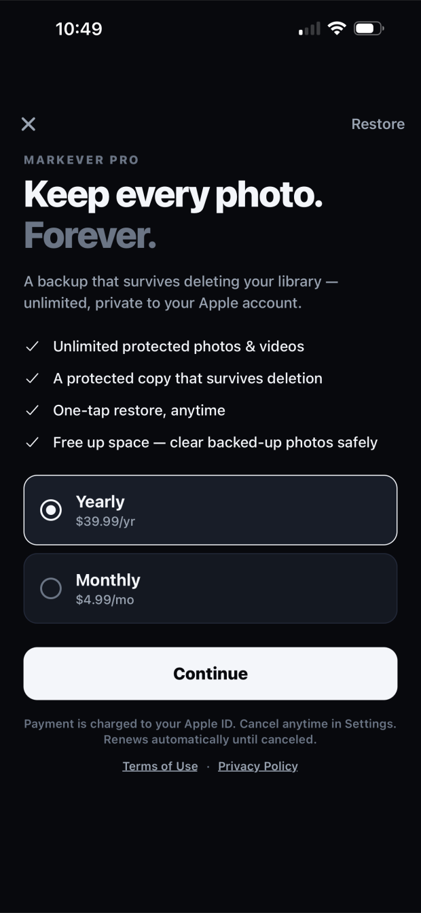

Sync isn't backup. Delete a photo to free space and it's gone everywhere — for good. Markever keeps a protected copy of every photo and video, one that survives even when you delete the original.

Most people only find out the hard way: they free up space, certain their photos were safe, and later discover they're gone for good. Markever is the copy that's actually still there.
They quietly vanish the moment you delete — so "free up space" turns into "gone for good." One mistake and it's lost.
A real backup. A protected copy your deletions can't touch — so you can free up space, fearlessly.
Your copy stays even after you delete the original. That's the whole point.
Your whole library, backed up automatically as you go.
Bring anything back in one tap — never any duplicates.
Restore everything, or a whole month, at once.
Everything, photos only, or just your favorites.
Your photos never leave your Apple account, and we never see them.

They stay inside your own Apple account — they never pass through us, and we can't see them. No Markever server ever receives or stores your photos.
Yes — Markever keeps a separate, protected copy, so it uses some of your own storage. That second copy is exactly what lets your photos survive deletion.
When you delete a backed-up photo from the Photos app, Markever keeps its copy and lists it under Recovered, so you can put it back anytime — with no duplicates.
No. Deleting your account removes your account and the app's local data from your device. Your backed-up photos are not deleted — you can sign back in to see them anytime.
No. Markever only reads your photo library (with your permission) to back it up. It has no access to your documents, messages, or other apps' data, and uses no trackers or advertising.
Email einkap1@gmail.com — we usually reply within a day.